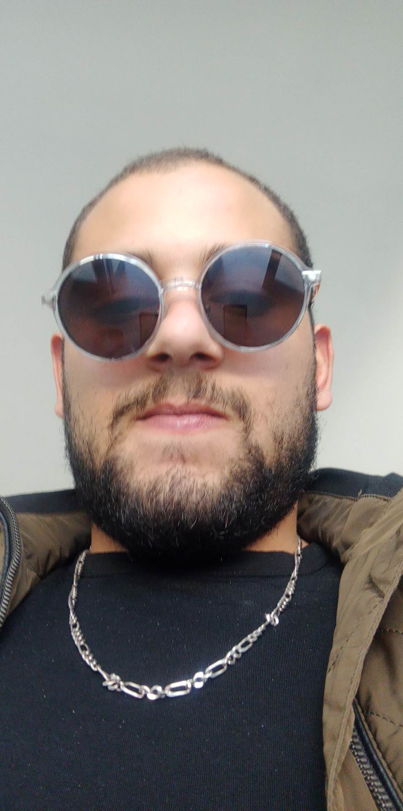

|  |
Fort d'une expérience solide dans le développement de logiciels, je me distingue par une expertise approfondie dans les langages tels que Java, Python et C, avec une focalisation particulière sur le domaine de l'informatique embarquée. Mon objectif premier consiste à concevoir des solutions innovantes destinées à résoudre des problématiques complexes et à améliorer l'expérience utilisateur, en mettant en avant les applications intégrées. Explorez mon portfolio pour découvrir mes projets, compétences et réalisations spécifiquement liés à l'informatique embarquée. N'hésitez pas à me contacter afin d'échanger sur des collaborations professionnelles, des projets stimulants dans le domaine de l'embarqué, ou simplement pour partager des idées. |
Email: ilyes.bouriga@esprit.tn
Téléphone: (216) xx xxx xxx